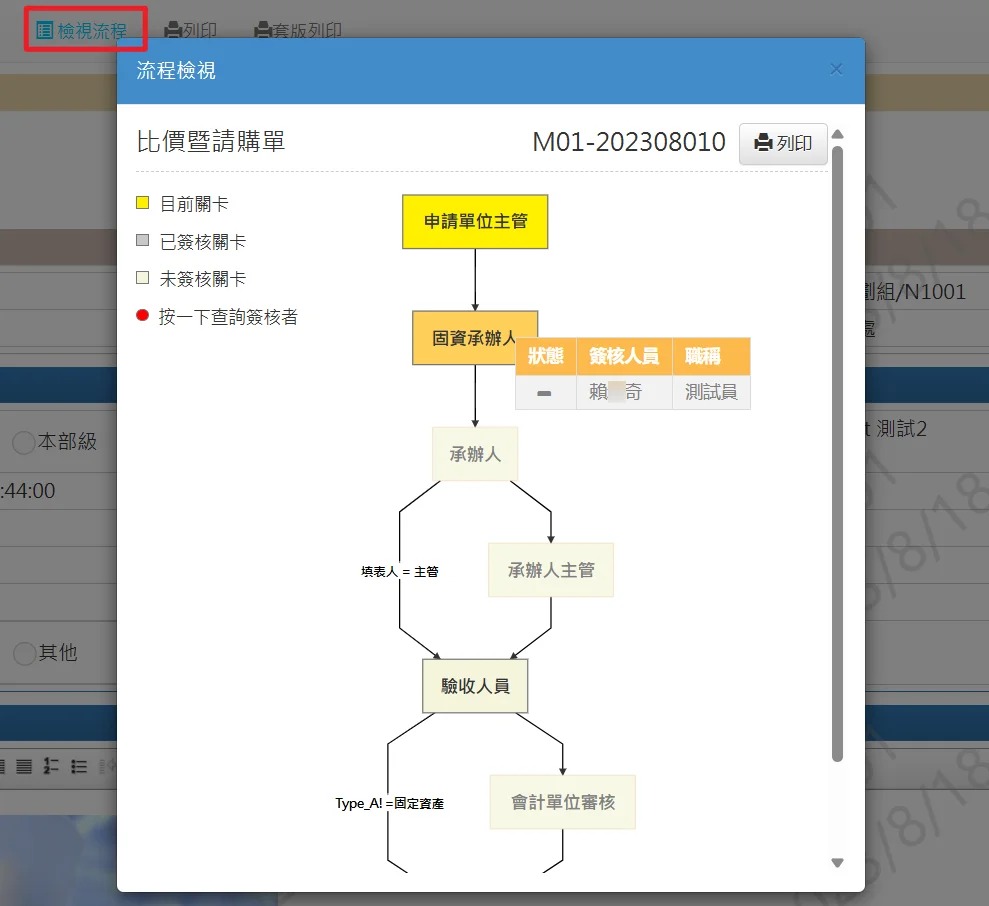
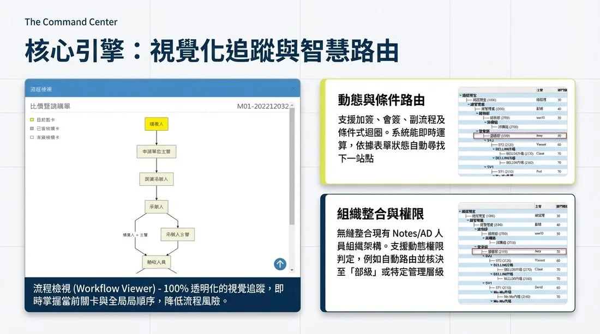
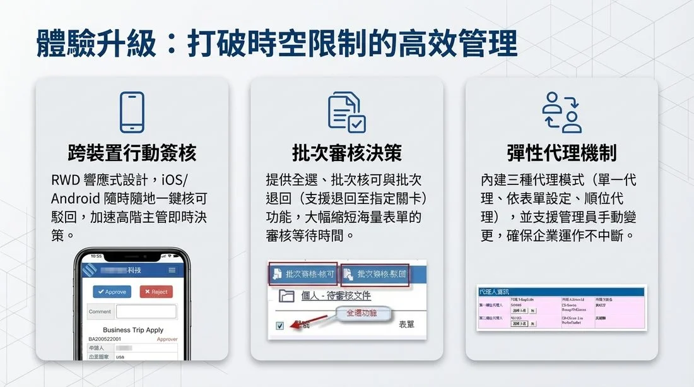
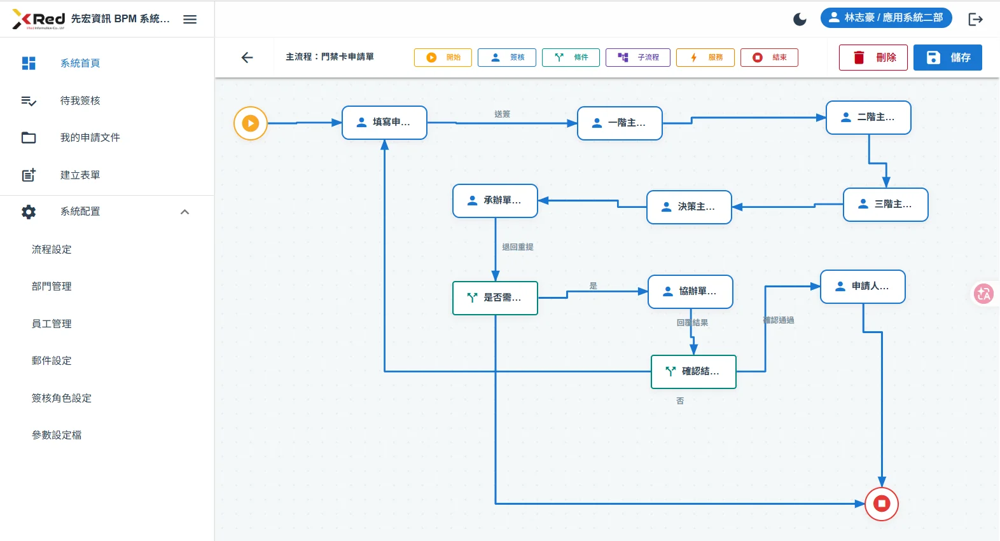
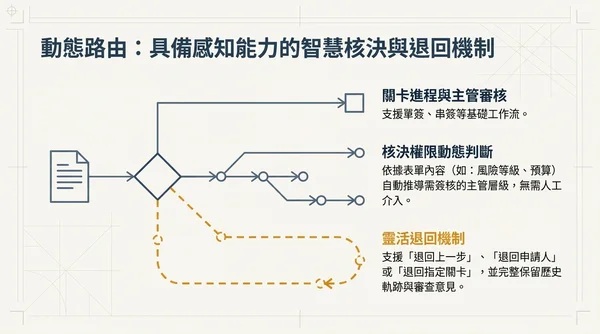
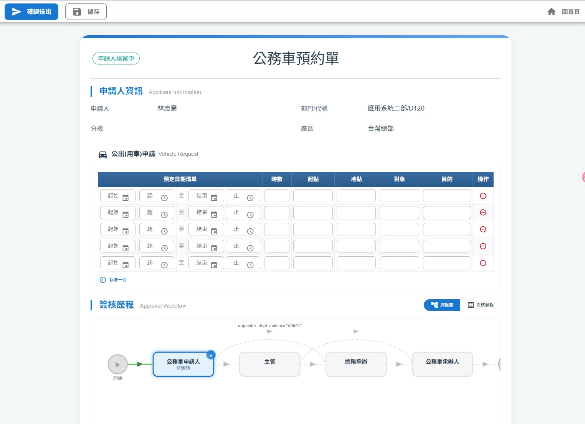
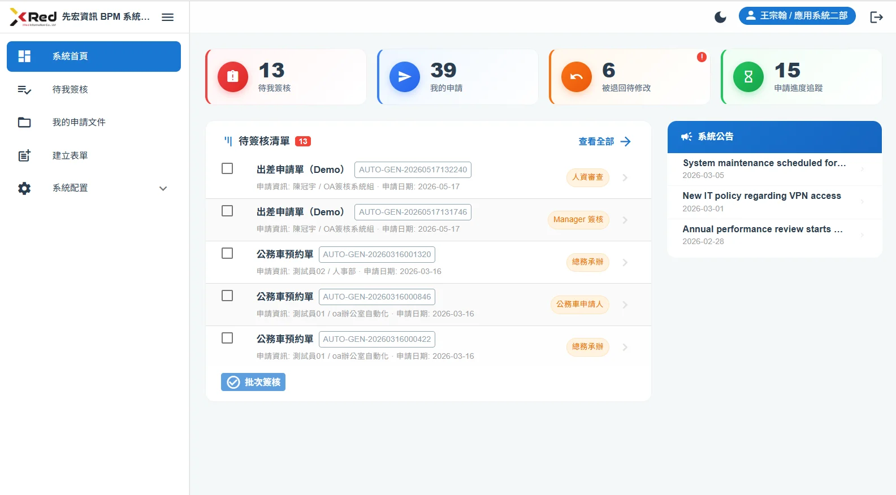
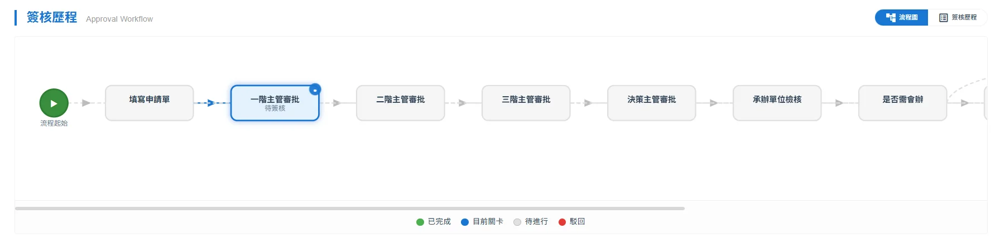
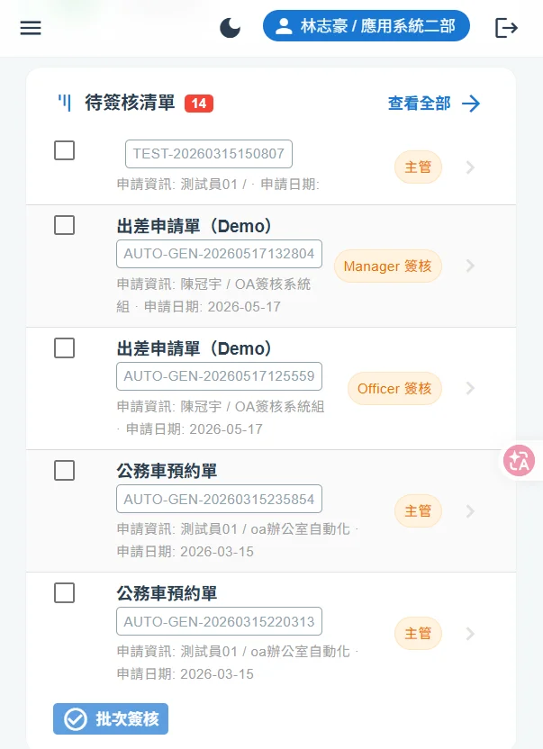

Xpower BPM — 企業流程管理與簽核解決方案
歷經多年企業實戰驗證的 BPM 簽核引擎。同一套完整功能，兩種架構選擇——從 Domino 原生到雲端 SaaS，滿足不同階段的企業需求。
為什麼企業選擇先宏 BPM
verified深厚的企業實戰經驗
已協助半導體封測、銀行法金、製造業等產業成功導入，累計處理逾百萬件流程實例。
hubERP 異質系統整合
已實際串接 SAP、Oracle ERP、TipTop 等主流 ERP，以及 MS-SQL、Informix、DB2 等外部資料來源。
smartphone行動化簽核
桌機、手機、平板皆可處理簽核文件，RWD 響應式設計，主管在外也能即時審批。
notifications_activeLine Bot / Teams / Email 通知
多管道即時推播待簽文件，提升處理效率。
shield_lock高安全性
RBAC 角色式權限控制搭配讀者/作者欄位，細粒度存取控制保護核心簽核資料。
基於 Xpower BPM 打造的企業級模組實績
我們先宏不僅提供強大的 BPM 引擎，更擁有豐富的客製化實戰經驗。無論是日常行政，或是跨部門、跨系統的核心業務，我們都能為您量身打造專屬的簽核流程：
account_balance行政與財務管理模組
- •電子公文與簽呈系統
- •零用金與日常請款系統
- •請採驗付系統 (Procurement & Payment)
- •贈品與物管系統
settings_suggest資訊與系統架構優化
- •企業入口網站 (EIP) 效能調校與行動化（平板/手機）
- •採購需求申請系統（含行動版加會簽功能）
- •IT 服務滿意度調查系統
factory特定產業與核心業務模組
- •【金融業】授信作業與聯徵查詢報告系統
- •【金融業】中小貸後季檢核與作業風險通報
- •【製造業】MSA 儀器校正管理系統
兩種架構，同一套功能
Xpower BPM 的核心簽核功能完全一致，差別在於底層架構。企業可依據現有環境與未來規劃，選擇最適合的版本：
Domino 原生版
經典架構 · 地端部署
建構於 HCL Notes / Domino 平台之上，採用 XPages 開發框架，結合 Server-Side JavaScript、CSS 與 HTML。
適合對象：已有 Domino 環境的企業，希望在既有平台上快速擴展簽核應用，充分利用現有 IT 投資。
- •與 Domino 帳號、權限體系無縫整合
- •直接承襲 Notes 安全機制（Reader / Author 欄位）
- •適合地端部署，資料不離開企業機房
- •支援 AD SSO 單一登入

Domino 版 BPM 流程檢視與簽核追蹤
Python + Vue.js 版
現代化架構 · 支援 SaaS
採用 Python FastAPI 後端搭配 Vue 3 + Quasar Framework 前端，雲原生架構，可提供 SaaS 雲端服務。
適合對象：希望走向現代化架構的企業，或尚無 Domino 環境但需要企業級 BPM 的組織。
- •瀏覽器直接操作，不需安裝 Notes Client
- •支援 SaaS 雲端部署（Google Cloud Run），也可地端自建
- •支援 AD SSO 單一登入（Azure AD / Entra ID）
- •PostgreSQL + JSONB 動態擴充，新增欄位免改 DB Schema
- •自動擴縮、藍綠部署、零停機更新
// SYSTEM_STACK
平台核心功能

核心引擎：流程定義、動態路由、權限控管三大引擎協同運作

體驗升級：智慧表單、行動簽核、即時監控，全面提升簽核效率
流程引擎 Workflow Engine
採用 BPMN 2.0 標準流程定義，支援四種節點類型（起始 / 任務 / 閘道 / 結束）與三種連線類型（必經 / 條件 / 其他）。流程定義完全儲存於資料庫，可透過圖形化設計器進行拖拉式設計，無須修改程式碼。支援條件運算式，可根據表單欄位值動態決定流程走向。

圖形化流程設計器：出差申請單範例，包含條件閘道、多層主管簽核與子流程
10 種簽核模式
完整支援企業所需的全部簽核情境：
| 模式 | 說明 |
|---|---|
| 串簽 | 依序逐級簽核 |
| 會簽 | 多人同時簽核，支援多數決過站 |
| 或簽 | 任一人核准即通過 |
| 加簽 | 動態加入額外簽核人 |
| 退回 | 四種退回模式（固定關卡 / 禁止退回 / 使用者指定 / 限定關卡） |
| 轉簽 | 將任務轉派給其他人員 |
| 代理 | 支援期間代理機制 |
| 條件式 | 依表單欄位值動態決定流程走向 |
| 批次 | 批次核可 / 批次駁回 |
| 混合 | 母子流程整合，子流程可獨立運作 |
動態路由引擎
支援關卡進程主管審核、核決權限動態判斷、靈活退回機制。

表單引擎 Form Engine
動態 Vue 元件架構搭配 JSONB 儲存，新增欄位無須修改資料庫 Schema。內建多種欄位元件：
- •文字輸入、條件式下拉選單、日期選擇、核取方塊、Radio 按鈕
- •子表格（SubForm）、檔案上傳、數位簽名
- •金額欄位（千分位）、加總 / 平均計算、必填檢核
- •依流程站別設定欄位權限（編輯 / 唯讀 / 隱藏）
- •表單版本控管，歷史表單可追溯

現代化表單介面：支援多 Section 分區、必填驗證、下拉選單、附件上傳等豐富元件
task_alt任務管理
- •個人待辦清單，6 種任務狀態追蹤（待簽核/進行中/已完成/退回/轉簽/逾時）
- •任務轉派與委派機制、代理人設定（支援期間代理）
- •SLA 時效管理與逾時自動三級警示（到期前 3 日、前 1 日、當日）
- •稽催通知支援重複催辦與主管介入時機設定
monitoring監控與管理
- •即時 Dashboard 數據看板：待簽核數、申請數、退回數、進行中案件等 KPI
- •流程實例以 SVG 圖形即時呈現，四種顏色區分節點狀態
- •完整稽核日誌（append-only 設計），所有操作不可篡改
- •自訂報表功能，高效聚合查詢
即時看板

待簽核數、申請數、退回數一目了然，搭配系統公告與批次簽核
簽核歷程追蹤

以四色節點即時呈現流程進度（已完成 / 目前關卡 / 待進行 / 駁回）
行動裝置支援
前端採用 RWD 響應式設計，支援 Desktop、Tablet 及 Mobile 三種版面配置，無需安裝任何 APP。支援觸控操作與深色/淺色模式切換。原生支援繁體中文與英文雙語介面。

phone_iphone行動簽核，不需安裝 APP
手機瀏覽器即可檢視待辦、批次簽核，主管在外奔波也能即時批准案件。
- •Desktop / Tablet / Mobile 三種版面自動適配
- •觸控操作 + 深色/淺色模式切換
- •繁體中文 / 英文雙語介面
- •批次簽核功能，海量表單一次處理
企業整合能力
| 整合項目 | 說明 |
|---|---|
| AD SSO 單一登入 | 透過 Azure AD / Entra ID 實現 OAuth 2.0 標準 SSO 認證，無 Session 機制，防止 CSRF 攻擊 |
| 組織架構同步 | 每日自動同步部門、人員與角色資料，差異比對確保效率 |
| ERP 異質整合 | 已實際串接 SAP、Oracle ERP、TipTop，透過 REST API 整合 |
| 文件歸檔 | 流程結案後自動歸檔至 SharePoint / 指定文件庫 |
| 通知推送 | Email SMTP、Teams Webhook、Line Bot 多管道即時通知 |
| REST API | 基於 FastAPI 自動生成 OpenAPI (Swagger) 文件，所有功能皆可透過 API 存取 |
AI 加值功能
Xpower BPM 整合先宏 X-Pert AI 技術，提供平台級 AI 微服務，任何表單或流程皆可依需求啟用：
auto_fix_high智慧表單預填
系統依據申請人歷史資料與組織規則，自動建議表單欄位填寫內容，降低重複輸入負擔。採用規則引擎比對推薦，不消耗 AI Token。
document_scanner附件 OCR 辨識
上傳收據、發票等紙本憑證影像，系統自動辨識金額、日期、商家名稱等欄位並回填表單，大幅減少人工逐筆輸入。
warning費用異常偵測
費用報銷送出前，自動比對歷史資料統計分布，標記異常項目並產出說明文字供審核者參考。
Phase 2 AI 展望
- •流程瓶頸分析：AI 自動識別卡關節點，產出視覺化報表與優化建議
- •對話式表單設計 (Chat-to-Form)：用自然語言描述即可建立或調整表單欄位
- •AI Agent 個人助理：自然語言查詢個人資訊，AI 即時回傳結果
安全與合規
admin_panel_settingsRBAC 權限控制
角色式權限搭配 Reader / Author 欄位，細粒度存取控制。
policy資安測試
採用 HCL AppScan SAST 原碼掃描，涵蓋 OWASP Top 10、CWE/SANS Top 25。
bug_reportSCA 分析
開放原始碼套件 CVE 漏洞檢測。
enhanced_encryption資料加密
HTTPS/TLS 傳輸加密 + 靜態資料 AES-256 加密。
history_edu稽核日誌
append-only 設計，所有操作不可篡改，滿足合規需求。
verified_user合規對應
支援 GDPR、個資法、ISO 27001 等規範。
架構比較一覽
| 比較項目 | Domino 原生版 | Python + Vue.js 版 |
|---|---|---|
| 後端技術 | HCL Domino / XPages | Python FastAPI |
| 前端技術 | XPages (SSJS + HTML) | Vue 3 + Quasar Framework |
| 部署方式 | 地端 (On-Premise) | SaaS 雲端 / 地端皆可 |
| 使用者端 | 瀏覽器 / Notes Client | 瀏覽器（免安裝） |
| 身份認證 | Domino 帳號 / AD SSO | AD SSO（Azure AD / Entra ID） |
| 資料庫 | Domino NSF | PostgreSQL + JSONB |
| 適合企業 | 已有 Domino 環境 | 新導入或現代化轉型 |
| 簽核功能 | 完全一致（10 種模式） | |
| 行動簽核 | 皆支援（RWD 響應式） | |
| 通知推送 | 皆支援（Email / Line Bot / Teams） | |
| ERP 整合 | 皆支援（REST API） | |
| AI 加值功能 | 皆支援 | |
expand_more 點擊展開完整簽核功能清單（供 IT 人員評估用）
流程節點與簽核設定
- •母子流程整合與子流程獨立使用
- •簽核人員多元設定：申請人、直屬主管、部門主管、作業部門主管、特定人、指定人
- •無簽核人員跳關、重覆簽核者自動 ByPass
- •條件閘道依欄位值動態決定流程走向 (==, !=, >, >=, <, <=)
會簽與加簽
- •動態加會簽、多層次會簽
- •會簽人數決過站設定（N 人中 M 人同意即通過）
退回與抽單機制
- •支援四種退回模式：退回固定關卡、禁止退回、使用者自行指定、限定指定關卡
- •申請人送出後、下一關尚未簽核前，可執行抽單 (Recall)
任務時效與代理
- •SLA 稽催通知：支援多層級逾時警示（到期前 3 日 / 1 日 / 當日）與重複催辦
- •主管介入機制：可設定稽催時是否副本通知主管，或於第 N 次稽催才通知主管
- •代理人設定：支援期間代理，代理人可處理被代理人之所有待辦事項
表單與權限控管
- •依流程站別動態控制欄位權限：必填、編輯、唯讀、隱藏
- •表單版本控管：歷史表單與流程實例皆保留當下版本狀態
- •簽核防堵機制：後端 JWT Token 驗證，不可切換帳號簽核
系統整合與稽核
- •完整稽核日誌（Append-only）：所有操作軌跡（簽核 / 退回 / 轉簽 / 意見）不可篡改
- •REST API 整合與自動生成 OpenAPI (Swagger) 文件